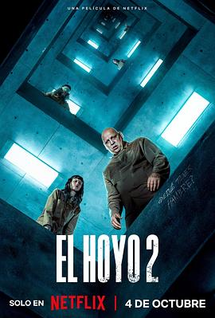
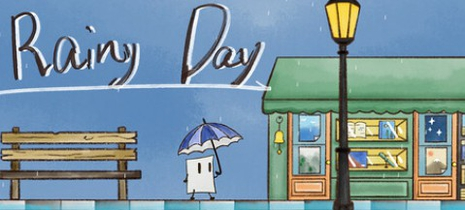
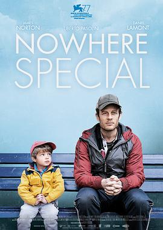

2024年10月 23 条
2024-10-28 15:24:40
2024-10-27 19:27:22
看过 引力弹弓 / Slingshot ★★★☆☆
很简单的故事，但是通过这种精神错乱的设定，让观众不知道哪个是现实，哪个是错觉。末尾还是挺悲壮的。
2024-10-26 13:02:06
 看过 异形：夺命舰 / Alien: Romulus ★★★★☆
看过 异形：夺命舰 / Alien: Romulus ★★★★☆
基本上剧情比较老套，末尾人类混合异形基因是个亮点
2024-10-22 15:31:40
 看过 死侍与金刚狼 / Deadpool & Wolverine ★★★☆☆
看过 死侍与金刚狼 / Deadpool & Wolverine ★★★☆☆
多元宇宙这么编有点太随意了吧😅😅😅 随便一个超级英雄都可以复活再去世再复活再去世。各种宇宙过来客串，就真纯客串，没有其他一点作用，那么问题来了，两个洛基呢？
2024-10-22 15:26:40
看过 荒野机器人 / The Wild Robot ★★★★★
梦工厂诚意满满的作品，从水彩画风格的上色，中规中矩的剧情，到片尾每一个小动物特写动画介绍配音的名字，以及最后用最大的一棵树展示credits名单，而且还有彩蛋。很久没看到这么用心做的动画了。笑点也有（比如说小天鹅长大学机器人说话），心酸也有（学会了飞行终于要离开父母了，留守老人单调的老年生活），简直写实。
2024-10-21 06:39:50
被pixel feeds推送了
2024-10-19 07:46:38
2024-10-16 05:48:53
看过 某种物质 / The Substance ★★★★☆
大聪看电影安利的，镜头真是太R级了，把从50岁到30岁的蜕变描绘的这么エロ，虽然也很讽刺就是了。感觉印象里看过一个日本电影和这个挺类似，最后皮肤全部脱落好像，忘掉了名字。
2024-10-13 10:48:41
 看过 无依之地 / Nomadland ★★★★☆
看过 无依之地 / Nomadland ★★★★☆
开着caravan随遇而安，看似很酷的生活方式，实际上是那些人不得不离开他们原来的生活。 See you on the road.
2024-10-13 09:04:10
看过 死神来了5 / Final Destination 5 ★★★★☆
这一部保持了之前的剧情流程，先有个预知未来的vision，然后尝试去避免，然后这次有个新的规则是可以以命换命，然而片尾告诉我们无济于事。好像是全季完结了？总结下来就是N个不可能事件都发生了，那这辈子也只能认命了
2024-10-12 21:15:10
看过 抓娃娃 ★★★★☆
设定很新颖，笑点也很多，也挺发人深思。也庆幸家里没这个条件，电影看着一直担心孩子有心理阴影，尤其是唯物主义那一款，真是楚门的世界教育版
2024-10-12 14:10:09
看过 死神来了4 / The Final Destination ★★★☆☆
这一部没有按照序号命名，可能是重启之作？感觉血腥程度依旧，但是猎奇程度略逊，剧情和之前也差不多，就是一个一个找，尝试打破顺序 etc.
2024-10-12 12:31:42
2024-10-12 12:30:31

说到京阿尼，就来查查京阿尼，nichijou 赛高！
2024-10-12 12:20:04
看过 败犬女主太多了！ / 負けヒロインが多すぎる！ ★★★★☆
剧情一般，但是作画真的细致啊，包括防火铁楼梯走过的镜头震动都有。角色设定还不错，一度以为在看京阿尼的番
2024-10-11 15:08:43
2024-10-09 18:52:06
2024-10-07 11:28:17

原来是西班牙的，默认英语忘了切换换成原声，很多口型没对上。这一部和上一部相比没有了新意。我记得上一部末尾是说最上层是一个厨房后厨，这一部就完全没有提及这部分。剧情上主要就是在说两派之争，有些乏味。
2024-10-06 19:53:41

在油管上看到作者的vlog，然后想起来黑猴子期间一直被推送这个游戏，然后就玩了一下。流程非常短（一个地图走两次），也有bug，但是动画和音乐已经很良心了。
2024-10-06 09:58:54
2024-10-05 18:40:14

又是被简介看催泪的
2024-10-05 17:56:00
看过 最终幻想女孩 / 勝手にふるえてろ ★★★☆☆
看的过程中睡着好几次，不知道是累了还是就是不吸引我，虽然本身看这个电影就是来看松冈茉优的🥲
2024-10-04 21:39:01
看简介都被催泪了